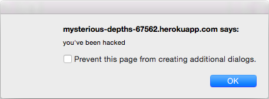
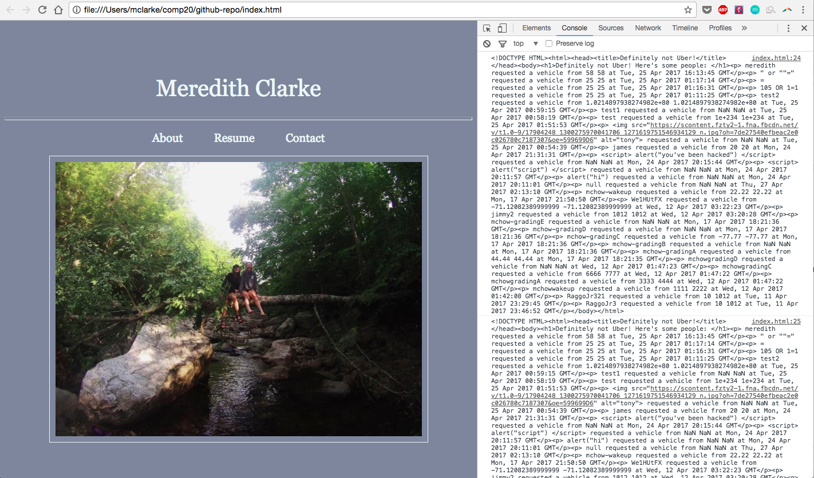
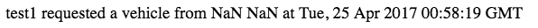

Comp 20 Assignment 4
Meredith Clarke
Introduction
The product that I am testing for security and privacy vulnerabilities is a web application and server that retrieves and displays current locations of vehicles and passengers, in the form of latitude and longitude, and sends it to a web application server that maintains this data. My partner, John Merfeld, built both the web application and the server and I intend to perform a security assessment on the privacy and security vulnerabilities that he left.
Methodology
To penetration test the application:
- I read up on methods for attacking web pages - listed below in the references section
- These articles gave me strategies to test the security
- I analyzed the code and looked for loopholes, based on common mistakes I had read about
- I tested various attacks to exploit these loopholes and took note of what worked and what didn't
- Two of these issues were involving user input, so I experimented and researched different possible, problematic, inputs
- I noted errors and vulnerabilities I found
- For some errors, I then researched further to understand how to protect code from those attacks.
Abstract of Findings
During my investigation of this web application and its security and privacy vulnerabilities I have found three major issues, although that is not the full extent of the security and privacy vulnerabilities that it has. The first and third problems are centered around users have too much freedom with their user input and, because this input is not checked in any way for malicious intent, the input could be extremely derailing for other users and the server. The second issue involves other websites accessing the data hosted by the URL. There are certain settings that can be used to prevent other websites from having such easy access to the web application's data, even if parts of the website are still open to the degree they are now, one should change the security settings for pages with more sensitive information.
Issues Found
- Server cross site scripting
- This issue is found at https://mysterious-depths-67562.herokuapp.com/, where the passenger requests are posted.
- This issue is of high severity because of the various kinds of attacks that it can allow. Attackers can commit anything from annoying pop-ups and irrelevant images to cookie and identity theft using cross site scripting. There is an unlimited amount of damage an attacker can do because the javascript used in cross site scripting has access to the same objects as the rest of the page and can use XMLHttpRequest to send http requests.
- In this specific instance, cross site scripting is possible when a user inputs their information, namely their username. Since the homepage of the web application outputs the username to the HTML page in an unchecked format, anything that is input is run. Therefore if the input is contained by script tags, the javascript will run, or another html object can be inserted in place of a username. I found this problem by looking through the code and recognizing that the username string was never validated, sanitized, or encoded. I then tested it, as shown below:

- I would prevent cross site scripting in this way by adding a sanitizing function, such as htmlspecialchars(), that convert special characters to HTML entities to preserve meaning but remove the possibility of cross site scripting. This is an easy preventative measure that goes a long way.
- Allowing sharing with every origin
- This error can be found in line 44 and 45 of index.js:
“app.all('/*', function(req, res, next) {
res.header("Access-Control-Allow-Origin", "*");
. . . "
Also can be seen in the response header of every page of the web application.
- This issue is severe because it allows any site to send a request to the site and process the response. There is no protection there.
- This issue is clearly defined in the code for index.js where is uses the express.js module to define Access-Control-Allow-Origin so that the information in all webpages can be used by any other webpage.
- Using another local website, I submitted a XMLHttpRequest() for the site and was able to access the DOMstring that contains the response to the request as test displayed in the console. The photo below demonstrates that. The code that allowed me to perform this came from the third link under references.

- In order to better the security for this web application, you must be specific and deliberate about the levels of security around CORS you have for each section of the web application. Some information may be ok to leave unprotected while other information you will want to keep protected. In order to properly protect the information in this case you would set Access-Control-Allow-Origin to a URI that is allowed to access these resources.
- Bad programming practice: relying solely on parseFloat() to verify latitude and longitudes
- This issue is in the index.js file on lines 59 and 60, and the results of this bad programming practice can be seen at https://mysterious-depths-67562.herokuapp.com/ when the latitude and longitude are simply displayed as “NaN”.
- This is an issue with low severity because it is more difficult than the server xss, described above, to insert malicious script, but it is still input data coming from a user, and thus cannot be trusted. There is the possibility for injection, file attacks, and buffer overflows, all of which can crash and or damage the web application and the data it holds. On top of actual security issues, it makes those inputs completely unusable because they do not have latitudes and longitudes, thus they should not be entered into the database or displayed.
- This issue stems from the tendency to always validate user input and, although the lat and long variables are put into the parseFloat() equation, the result of this code is often NaN being shown to the screen. I found this by testing different inputs and examining the code.
- We can see how unhelpful, and potentially dangerous, this practice is by looking at the passenger requests, as shown in the image below:

- To solve this problem, the latitude and longitude values must be verified to make sure that they are helpful, relevant data. This verification can be done by using a helper function. At the very least, “|| (lat == ‘NaN’) || (lng == 'NaN')” can be added to the if statement at lines 63 through 66 in index.js, so that the error message displays when this error occurs and the information doesn’t contaminate the database.
Conclusion
All in all, most of the fixes noted here are easy to integrate and benefit you many times over. For future endeavors, focusing on user input will help you to avoid making these mistakes again. Ultimately though, there are decisions that have to be made about what needs what amount of security. So starting with the data in your web application that needs the most security and then working out from there can create an efficient but still sufficiently secure web application.
References
https://www.acunetix.com/websitesecurity/cross-site-scripting/
https://tuftsdev.github.io/WebProgramming/notes/web_security.html
https://developer.mozilla.org/en-US/docs/Web/API/XMLHttpRequest/responseText
https://stackoverflow.com/questions/12001269/what-are-the-security-risks-of-setting-access-control-allow-origin
https://www.owasp.org/index.php/Data_Validation#Where_to_include_validation